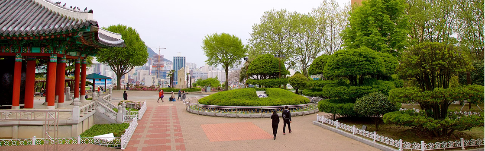

YOUR NEXT TRIP:
Discover Busan

Busan, South Korea’s rising star, offers everything from top-notch steakhouses to traditional street food stalls. Here, we explore South Korea’s second city and discover its culinary offerings.
FOR HISTORY LOVERS
Discover 3 unmissable destinations in Busan
Busan’s attractions range from centuries-old Buddhist temples dotting the city’s mountains and coastline to pristine beaches with crystal-clear waters. This coastal city has plenty to do year-round—families can spend time at a seaside aquarium, shoppers can explore vibrant neighborhoods, and nature lovers can enjoy long hikes to scenic viewpoints.
The Buddhist shrines that dot Busan's coastline and mountains feature stunning architecture that will delight photographers.

1. Haedong Yonggungsa Shrine
Haedong Yonggungsa Temple is a Buddhist temple located in the far northeast of Busan. Built in 1376, it is one of the few temples in Korea built on the seashore – you can enjoy views of the East Sea on one side and beautiful mountains on the other.Good for:
・History

2. Beomeo-sa Shrine
Beomeo-sa Temple is one of the largest shrines in South Korea. It is located high on the eastern edge of Geumjeongsa Mountain and is away from the hustle and bustle of the city. The temple's Daeungjeon Hall is a well-preserved example of Joseon Dynasty architecture.Good for:
・History 
3. Yongdusan Park
Yongdusan Park, located in the center of Busan, is home to some of the city’s most important monuments. You can enjoy spectacular views from the top of the 120-meter-high Busan Tower. The park is home to two museums – check out traditional musical instruments at the Museum of World Folk Instruments and over 80 Korean sailing boats at the Exhibition Hall of World Model Boats.Good for:
・Couples
・Families
・Budget
The best things to do in Busan showcase the city’s reputation as a major seaport in Asia. Often seen as the quintessential South Korean city, you’ll experience a unique atmosphere of ethnic and cultural diversity as the city welcomes a cosmopolitan crowd year-round.